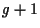

Next: Search operator
Up: S
Previous: Schema
Schema theorems
theorems, which have been offered as an attempt to explain the
functioning and the behavior of canonical
GAs
using
fitness-proportionate selection.
Usually, schema theorems yield lower bounds for the expected occupation
numbers of
schemata at
generation , provided that the actual occupation numbers at
generation are completely known.
Hans-Georg Beyer
2002-02-25